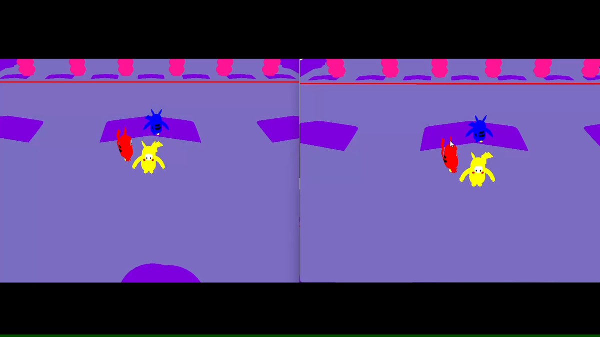

접속 및 식별
Accept 순서에 따라 캐릭터 번호를 부여하고 클라이언트별 스레드를 생성합니다.
NETWORK GAME PROGRAMMING / PAGE 01

NETWORK GAME PROGRAMMING / PAGE 02

접속부터 게임 종료까지 서버와 클라이언트의 책임을 나누고, 패킷이 어느 시점에 이동하는지 먼저 설계했습니다.
Accept 순서에 따라 캐릭터 번호를 부여하고 클라이언트별 스레드를 생성합니다.
클라이언트가 입력과 Character 상태를 서버로 전송합니다.
서버에서 캐릭터·장애물 AABB Collision과 도착 상태를 확인합니다.
갱신된 상태를 각 클라이언트에 전달해 동일한 장면을 그립니다.
NETWORK GAME PROGRAMMING / PAGE 03
아래 문장은 실제 캡처와 확인 결과에 맞춰 수치·현상 중심으로 교체하면 됩니다.
[클라이언트 수]개의 화면에서 캐릭터 위치와 상태가 동일하게 반영됨을 확인했습니다.
접속 순서에 맞춰 캐릭터 번호가 부여되고 각 클라이언트에서 구분됨을 확인했습니다.
캐릭터–캐릭터, 캐릭터–장애물 충돌 판정 결과를 플레이 상태에 반영했습니다.